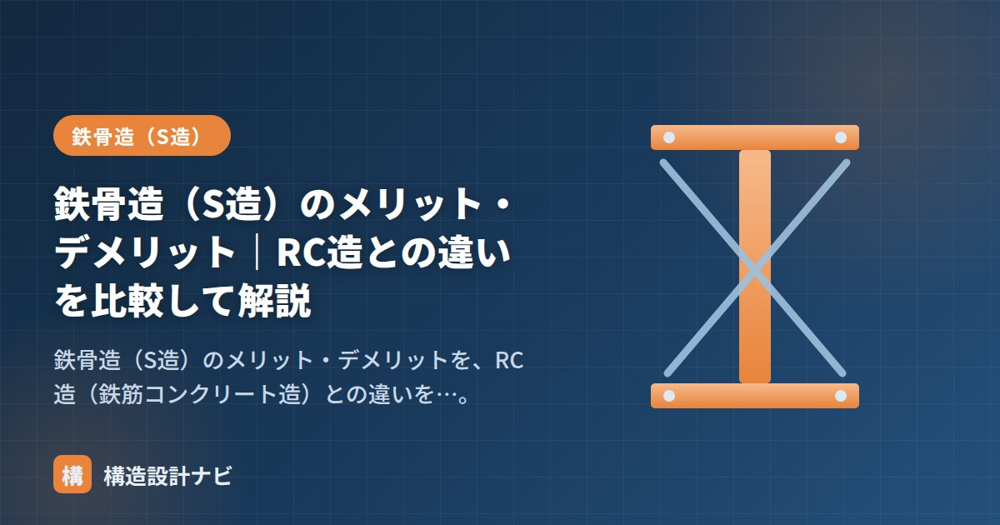

鉄骨造（S造）のメリット・デメリット｜RC造との違いを比較して解説

鉄骨造（S造）の長所・短所は、ライバルである鉄筋コンクリート造（RC造）と比べると一番よく理解できます。この記事では、S造のメリット・デメリットをRC造との違いを軸に整理します。
鉄骨造のメリット
- 大スパンが飛ばせる：高強度なので、柱のない広い空間をつくれる。工場・倉庫・体育館・店舗に最適。
- 軽い：RC造より建物が軽く、地震力（重量に比例）や基礎・地盤への負担が小さい。高層にも有利。
- 工期が短い：工場で部材を製作し現場で組み立てるため、コンクリートの養生待ちがなく早い。
- 品質が安定：工業製品の鋼材はばらつきが小さい。
- 粘り強い（じん性）：大地震で大きく変形しても一気に壊れにくい。
- リサイクル性：解体時に鋼材を再利用しやすい。
鉄骨造のデメリット
- 火災に弱い：鋼は約500℃で強度が半減するため耐火被覆が必要。RC造はコンクリートが守るので被覆不要。
- 錆びる：防錆処理（塗装・めっき）が必要。
- 揺れ・振動を感じやすい：軽く剛性が低めなので、歩行振動や風揺れの居住性検討が重要。RC造は重く硬いので揺れにくい。
- 座屈に注意：細い部材は座屈しやすく、補剛が必要。
- 遮音性が低め：RC造に比べ音が伝わりやすい。
- コスト変動：鋼材価格の影響を受けやすい。
S造とRC造の違い（比較表）
| 項目 | 鉄骨造（S造） | 鉄筋コンクリート造（RC造） |
|---|---|---|
| 重さ | 軽い ◎ | 重い △ |
| スパン | 大スパン向き ◎ | 中スパン ○ |
| 工期 | 短い ◎ | 長い △ |
| 耐火 | 耐火被覆が必要 △ | そのまま高い ◎ |
| 遮音・揺れにくさ | 低め △ | 高い ◎ |
| じん性（粘り） | 高い ◎ | 設計による ○ |
| 主な用途 | 工場・倉庫・体育館・高層ビル | マンション・学校・庁舎 |
「広い空間・高層・短工期」ならS造、「遮音・耐火・揺れにくさ」ならRC造。建物の用途と優先順位で選びます。両者を組み合わせた混構造（下層RC＋上層S造など）も使われます。詳しくは「RC造・S造・SRC造・木造の違い」をどうぞ。
鋼材の弱点（熱・錆）の詳細は「鉄骨の材料」、RC造側の特徴は「鉄筋コンクリート造（RC造）とは？」をどうぞ。
施主にS造とRC造どちらが良いか聞かれたとき、メリット表だけで納得してもらうのは難しいと感じています。実際には杭や基礎の規模まで含めた総工事費で比較しないと、上部構造の軽さがどれだけ効いてくるかが伝わらず、後になって想定と違うと言われることがあるからです。
どのくらい軽いのか（重量の比較）
S造の最大の武器は「軽さ」です。感覚的な話ではなく、設計で使う単位面積あたりの重量（固定荷重の目安）で比べると差がはっきりします。
この差は上部構造だけの話にとどまりません。建物が軽ければ地震力が小さくなり、柱・梁の断面が小さくなり、基礎や杭の規模も縮小できます。「S造の軽さは基礎工事費で効いてくる」と覚えておくと、コスト比較のときに説明しやすくなります。
用途別の選び方の目安
| 建物の条件 | 向いている構造 | 理由 |
|---|---|---|
| 柱のない広い空間がほしい（工場・倉庫・体育館） | S造 | 大スパンを飛ばせる。RC造では梁がきわめて大きくなる |
| 上下階の生活音を抑えたい（分譲マンション） | RC造 | 重量と厚みで遮音性が高い。S造は床衝撃音が伝わりやすい |
| 工期を短縮したい | S造 | 工場製作＋現場組立。コンクリートの養生待ちがない |
| 地盤が悪く基礎コストを抑えたい | S造 | 建物が軽く、杭の本数・長さを減らせる |
| 耐火性能を確保したい（避難施設等） | RC造 | コンクリート自体が鉄筋を保護。S造は耐火被覆が必要 |
実務では、下層をRC造、上層をS造とする混構造もよく使われます。地下や低層の重い部分をRC造で固め、上層は軽いS造にすることで、それぞれの長所を組み合わせる考え方です。
よくある質問
Q1. S造とRC造ではどちらが建築コストは安いですか？
一概には言えません。上部構造だけを比べると鋼材価格の影響でS造が高くなることもありますが、S造は建物が軽いため基礎・杭の規模を縮小でき、工期短縮による経費削減も見込めます。逆にRC造は耐火被覆が不要な分のコストが浮きます。実際の比較では、上部構造・基礎・耐火被覆・工期をすべて含めた総工事費で検討します。
Q2. 鉄は約500℃で強度が半減するとのことですが、火災でS造は崩れるのですか？
耐火被覆がなければ危険です。鋼材は温度上昇とともに急激に強度を失い、500℃前後で常温の約半分、800℃では2割程度まで低下します。そのため耐火建築物では、吹付けロックウール・耐火板・耐火塗料などで鋼材を包み、規定時間（1〜3時間）は所定の温度を超えないようにします。RC造はコンクリートが鉄筋を覆っているため、この被覆が不要です。
Q3. S造は揺れを感じやすいと聞きますが、住宅には向きませんか？
居住性の検討は必要ですが、向かないわけではありません。S造は剛性が相対的に低いため、風による揺れや人の歩行による床振動を感じやすい傾向があります。設計では床の固有振動数を確認し、必要に応じて小梁を増やす、床スラブを厚くする、制振装置を設けるなどの対策をとります。広い空間や短工期のメリットが優先される用途では、S造の住宅・共同住宅も一般的です。
まとめ
- S造の長所は大スパン・軽さ・短工期・じん性。RC造に対する強み。
- S造の短所は耐火被覆・錆・揺れ・座屈。これらはRC造の得意分野。
- 用途と優先順位（空間か、遮音・耐火か）で使い分ける。